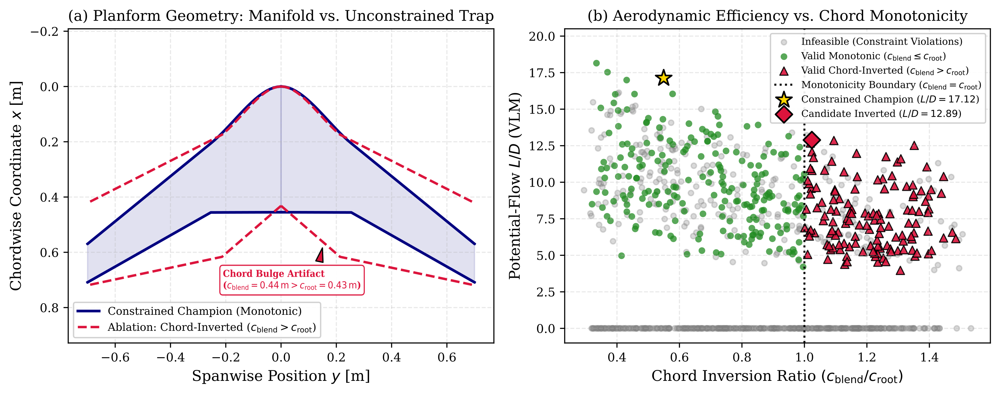

In conceptual aircraft multidisciplinary design optimization (MDO), low-order potential flow solvers such as the vortex lattice method (VLM) are almost universally favored. They evaluate in milliseconds, capture induced drag trends, and provide reasonable spanload estimates for planar configurations.
However, when global gradient-free optimizers (such as genetic algorithms or particle swarms) are coupled with unconstrained geometric parameterizations, they rapidly discover numerical loopholes in the solver rather than physically viable aircraft. I call this phenomenon the aero-geometric trap.
1. The Anatomy of Solver Exploitation and the Dead-Zone Penalty
In conceptual aircraft multidisciplinary design optimization (MDO), low-order potential flow solvers such as the vortex lattice method (VLM) evaluate in milliseconds and capture induced drag trends. However, when global optimizers navigate unconstrained geometric parameterizations, they encounter what I characterize as the aero-geometric trap: the solver computes smooth solutions for dysfunctional geometries without raising numerical errors, silently draining optimization budget into unproductive search space.
A dedicated 1,000-sample Latin Hypercube Sampling (LHS) ablation study demonstrated the mechanism:
- Chord Inversion Dead Zones: When chord monotonicity constraints ($c_{\mathrm{root}} \ge c_{\mathrm{blend}} \ge c_{\mathrm{tip}}$) are omitted, 35.5% of random LHS evaluations generate chord-inverted geometries where the blend chord exceeds the root chord ($c_{\mathrm{blend}} > c_{\mathrm{root}}$).
- Severe Aerodynamic Degradation: As shown in Figure 1, chord-inverted configurations suffer a massive efficiency penalty: the maximum lift-to-drag ratio discovered across all chord-inverted candidates is $(L/D)_{\max} = 12.89$, compared to $18.15$ for monotonic planforms (a 29.0% efficiency drop, $p < 0.001$). The outboard area ballooning increases wetted area without generating proportional circulation, while demanding excessive static margins that compound pitch trim drag.
- Silent Computational Waste: Crucially, potential flow solvers compute these distorted geometries without numerical divergence or failure codes. Rather than crashing, the solver evaluates them smoothly, squandering over a third of exploratory evaluations in an aerodynamically inferior dead zone.

2. Geometric Regularization via $C^1$-Continuous Hermite Manifolds
To eliminate solver exploitation without artificially constricting the design space to rigid textbook templates, I formulated a $C^1$-continuous Hermite parametric manifold kernel. The airframe planform is governed by 5 spanwise stations: root, blend, transition, mid-wing, and winglet.
The manifold enforces mathematical invariants directly in the geometry generator:
- Strict Chord Monotonicity: The derivative $\frac{dc}{dy} \le 0$ is enforced along the semi-span ($c_{\mathrm{root}} \ge c_{\mathrm{blend}} \ge c_{\mathrm{tip}}$), preventing optimizer-induced waist-pinching.
- First-Derivative Tangency: Tangent vectors at sectional transitions are clamped to maintain $C^1$ continuity, eliminating discontinuous panel edges that trigger localized singularity spikes in low-order solvers.
- Watertight B-Rep Solid Kernel: Using an automated Python OpenCASCADE pipeline, every generated geometry is exported as a watertight solid body with valid volume, eliminating micro-gaps and zero-thickness edges for automated downstream CFD meshing.

3. The Coupled Dynamic Center-of-Gravity Trim Loop
A classic failure mode in autonomous flying wing optimization is the separation of aerodynamic sizing from internal packaging. Flying wings lack horizontal tails; longitudinal pitch trim cannot be resolved after the fact with an adjustable stabilizer without severe trim drag penalties.
My pipeline integrates a dynamic center-of-gravity (CG) loop inside every optimizer iteration:
- The solver evaluates the neutral point derivative $x_{\mathrm{np}} = x_{\mathrm{ref}} - \left(\frac{dC_m}{dC_L}\right) \bar{c}$ from the aerodynamic solver.
- The internal packaging engine computes the required battery pack centroid position $x_{\mathrm{batt}}$ within physical centerbody limits to guarantee static margin within the 15% to 22% MAC stability corridor (Pareto champion at 22.5%).
- The trim angle of attack is solved simultaneously to ensure neutral pitch trim ($C_m = 0$) at cruise speed without requiring elevon deflection.
4. Post-Submission 3D RANS CFD Cross-Check: The 124% Viscous Drag Rise
In the submitted manuscript, cross-solver consistency analysis against viscous 3D strip theory (AeroBuildup coupled with XFOIL polars) established that the optimization pipeline behaved as a conservative estimator within the low-order computational hierarchy, underpredicting cruise $L/D$ relative to AeroBuildup ($17.12$ vs $23.22$) due to intentional Raymer form factor inflation. However, Section 8 of the manuscript highlighted an important caveat: whether low-order conservatism holds under full 3D boundary-layer crossflow and winglet junction separation remained to be verified through Navier-Stokes CFD.
Following manuscript submission, I executed a high-fidelity 3D Reynolds-Averaged Navier-Stokes (RANS) cross-check in SimScale and cross-checked it against SU2 using the Spalart-Allmaras turbulence model on the 10,087-evaluation Pareto champion.
The 3D Navier-Stokes solution revealed that true 3D viscous effects point in the opposite direction from 2D strip theory, demonstrating why conceptual-level conservatism cannot substitute for viscous CFD:

While the low-fidelity Raymer polar drag build-up predicted a zero-lift drag coefficient of $C_{D0} = 0.01077$, 3D RANS measured $C_{D0} = 0.0242$ (peak $L/D = 13.1$): a 124% parasite drag rise. Surface shear and pressure slice analysis located the cause:
- Winglet Root Vortex Interference: The intersection between the vertical winglet and the swept wing tip produces an adverse pressure gradient, thickening the boundary layer and generating a localized separation vortex undetectable by low-order strip methods.
- Turbulent Wetted Area Accumulation: The $0.84\,\text{m}^2$ blended centerbody experiences extended turbulent boundary-layer development compared to isolated 2D foil polars.

5. Key Engineering Takeaways
1. Geometric invariants (such as $C^1$ Hermite continuity and strict chord monotonicity) eliminate computational dead zones by construction, preventing optimizers from wasting over 35% of their evaluations on degraded topologies.
2. Dynamic CG balancing must be coupled directly into the aerodynamic optimizer; flying wing airframes optimized without packaging constraints are un-trimmable in physical flight.
3. Active learning doubled the feasibility rate from 28.1% to 54.7% across 10,087 evaluations, delivering a +7.5% (+20.9 km) operational range gain.
4. Low-order conservatism against 2D strip theory does not guarantee safety in physical flight: post-submission 3D RANS CFD identified a 124% parasite drag rise driven by winglet root vortex interference and extended turbulent wetted area accumulation, proving that 3D Navier-Stokes calibration is essential before freezing tooling geometry.
The complete research manuscript detailing the mathematical proofs, surrogate active learning architecture, and dataset validation is under review at Aerospace Science and Technology (Elsevier, Manuscript ID: AESCTE-D-26-06017; Zenodo Preprint DOI: 10.5281/zenodo.22893593).